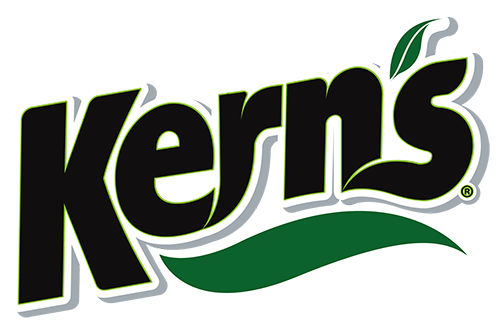

Catálogo de Productos
Tipos de Ketchup
Ver Ketchups
Ketchup Clásico
Ketchup Picante
Tipos de Jugos
Jugos Verdes
Ver Jugos Verdes
Jugo Detox
Jugo Mixto
Jugos Rojos
Ver Jugos Rojos
Nombre Producto
Nombre Producto